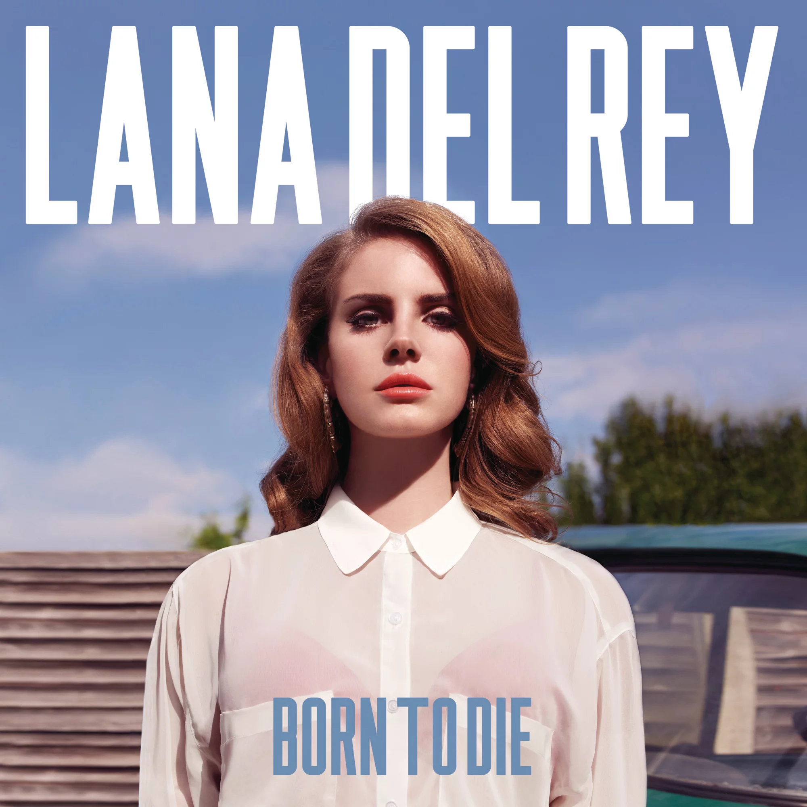

Albuns
O intuito dessa página é falar de maneira bem superficial sobre os álbuns da dignissíma mamãe Del Rey. Através disto, espero que consiga despertar em você o interesse de conhecer a Lana e suas músicas.
Born To Die

Born To Die é o segundo álbum de estúdio da artista musical estadunidense Lana Del Rey. O seu lançamento
ocorreu em 27 de janeiro de 2012 na Alemanha e na Irlanda e no dia 31 do mesmo mês nos Estados Unidos,
através das editoras discográficas Interscope, Polydor e Stranger Records. Com o intuito de divulgar o
seu trabalho à indústria fonográfica e estabilizar-se na carreira artística, a cantora gravou um álbum
de demonstração intitulado Sirens no ano de 2005, sob o pseudônimo de May Jailer. O projeto e as suas
constantes apresentações em shows de talentos renderam-lhe um
contrato com a gravadora independente 5 Point Records, com a qual ela lançou o seu disco de estreia
epônimo quatro anos mais tarde, que acabou por ser retirado de circulação por a gravadora não poder mais
financiar a sua divulgação. Oficializando-se como o responsável por inserir Del Rey no cenário musical
internacional, Born To Die foi concebido ao longo de 2010 e 2011, após a cantora fechar o contrato com
uma grande editora, e teve as suas gravações concluídas depois que o seu primeiro single, "Video Games",
tornou-se um êxito viral na Internet, o que causou um burburinho entre os meios de comunicação em
relação à, até então, desconhecida cantora.
Musicalmente, Born To Die possui uma sonoridade voltada aos estilos trip hop e pop barroco, fundindo-os
com elementos da música alternativa, do hip hop e, ainda, da música pop, enquanto que o seu lirismo
retrata uma obscura história de amor vista com olhos esperançosos e aborda temas relacionados a drogas,
ao sexo, tragédias e às dificuldades que a artista passou para se tornar uma cantora. Considerado um dos
álbuns mais esperados de 2012, foi recebido com análises divergentes pelos críticos musicais, com alguns
a elogiar as habilidades vocais de Del Rey e suas melodias.
Outros, contudo, alegaram que, embora apresentasse um bom material, o seu lançamento aconteceu de forma
precipitada e, eventualmente, talvez tenha prejudicado todas as ideias que ali foram postas. Os
resenhistas também notaram que o estilo da cantora lembrava a música dos anos 1950, e que boa parte das
letras das canções referia-se a sonhos americanos, direcionadas ao seu ex-namorado. Alguns, ainda,
questionaram-se sobre a autenticidade da cantora em sua carreira musical, descrevendo-a como moldada
pela indústria pop.
Ultraviolence

Ultraviolence é o terceiro álbum de estúdio da artista musical norte-americana Lana Del Rey. O seu
lançamento ocorreu em 13 de junho de 2014, através das gravadoras Interscope e Polydor Records. Apesar
de ter cogitado a possibilidade de não gravar um novo CD pouco após o lançamento de seu segundo disco de
originais, Born To Die, em 2012, Del Rey começou a escrever músicas para Ultraviolence no ano de 2013,
ao lado de seu ex-namorado Barrie O'Neill. A cantora prosseguiu com a produção do disco em inícios de
2014, ano em que conheceu Dan Auerbach, vocalista do The Black Keys, com o qual iniciou uma relação de
trabalho que resultou na renovação do material
que a cantora julgava ter concluído. Embora tenha contado com o auxílio de Greg Kurstin, Rick Nowels,
entre outros, Auerbach foi responsável pela maior parte da produção musical de suas canções, que derivam
em sua maior parte de estilos desert rock, rock psicodélico e soft rock, mas também apresentam
influências do rock independente, presente em Born To Die, e de jazz fusion, e possuem o trabalho de
instrumentos musicais variados, como guitarra elétrica, violão de doze cordas, bateria e mellotron.
Não sendo muito diferente de seu antecessor em termos líricos — abordando temas como o amor, o sexo, o
dinheiro e a fama —, Ultraviolence recebeu análises geralmente positivas da mídia especializada, a qual
prezou os vocais da artista e os coros presentes nas melodias. Notado por se tratar de um álbum
conceitual, também recebeu elogios por sua produção e por seu estilo guiado pelo rock do final do anos
1950 e 1960, bem como pela sua melancolia e capacidade de fundir romances fatais a temas sexuais. Muitos
analistas ainda ressaltaram a evolução musical apresentada por Del Rey
em relação a Born to Die, o qual foi alcunhado de inautêntico em várias resenhas, o que não foi
observado em Ultraviolence. No entanto, alguns ainda criticaram o trabalho pelos temas recorrentes das
canções, além de similares aos apresentados em seu lançamento anterior.
Honeymoon

Honeymoon é o quarto álbum de estúdio da cantora americana Lana Del Rey. O seu lançamento ocorreu em 18
de setembro de 2015 sob a distribuição da gravadora Universal Music e afiliadas. As canções do CD
começaram a ser concebidas em meados de 2014, pouco após a liberação do terceiro disco de originais da
artista, Ultraviolence. Inicialmente, a cantora pretendia lançar uma reedição de seu último trabalho,
mas editou-o como um novo disco depois de escrever grande parte do material até ao início de 2015. Neste
trabalho, a musicista possui maior participação em seu processo criativo,
produzindo-o inteiramente com o auxílio de Kieron Menzies e Rick Nowels. Honeymoon foi gravado nos
estúdios Electric Lady Studios, em Nova Iorque, e The Green Building, na Califórnia, entre dezembro de
2014 e os meses iniciais de 2015.
Descrito por Del Rey como um disco "retrô-futurístico", Honeymoon deriva de gênero barroco pop com
influências de estilos jazz e trap. Liricameente, reflete as emoções e humor de Lana Del Rey à época de
sua escrita. Com canções que exploram temas como relacionamentos torturados, amargura, luxúria e,
sobretudo, o escapismo e o anti-voyeurismo, é mais surrealista e menos autobiográfico que os lançamentos
prévios da cantora. Considerado um dos mais aguardados de 2015, o disco foi recebido com análises
predominantemente positivas pelos críticos de musica contemporânea, que elogiaram o seu conteúdo musical
eclético e enfatizaram a sua natureza lírica por exibir
uma artista "natural" e "autêntica", e descreveram-no como o melhor da carreira de Del Rey.
Lust for Life

Lust for Life é o quinto álbum de estúdio gravado pela cantora e compositora americana Lana Del Rey. O
seu lançamento mundial ocorreu em 21 de julho de 2017. Lana del Rey começou a escrever as canções de seu
subsequente disco em meados de 2015, pouco após a edição de seu quarto trabalho de estúdio, Honeymoon
(2015). A artista prosseguiu com a elaboração do material ao longo de 2016 e começo de 2017, tendo sido
fortemente influenciada pelo cenário político contemporâneo. Em Lust for Life, del Rey retomou a
parceria com Emile Haynie, produtor musical com quem trabalhou no êxito Born to Die (2012), bem como com
Rick Nowels e Kieron Menzies, produtores de Honeymoon.
Benny Blanco, Max Martin, Boi-1da, Mighty Mike, Metro Boomin, Sean Ono Lennon, Dean Reid, Jahaan Sweet
são também creditados como produtores de Lust for Life.
O primeiro single do disco, "Love", foi lançado em 18 de fevereiro de 2017. A liberação do material foi
antecipada devido à divulgação ilegal da faixa na Internet, que ocorrera no dia anterior. O segundo
single do disco, "Lust for Life", com participação de The Weeknd, foi lançado em 19 de abril de 2017.
Lust for Life é o primeiro álbum em sua discografia a conter participações de outros cantores. O álbum
recebeu uma nomeação para o Grammy Awards de 2018 na categoria de Best Pop Vocal Album, tornando-se a
segunda indicação de Lana na categoria.
Norman Fucking Rockwell

Norman Fucking Rockwell! é o sexto álbum de estúdio da cantora norte-americana Lana Del Rey. Seu
lançamento ocorreu em 30 de agosto de 2019, por intermédio da Polydor Records e Interscope Records. O
título do álbum foi anunciado em 18 de setembro de 2018, por intermédio do radialista Zane Lowe, da
rádio Beats 1.[3] Produzido por Jack Antonoff, conta, ainda, com a participação de Rick Nowels, Zach
Dawes e Laura Sisk.
Os primeiros singles do álbum, "Mariners Apartment Complex" e "Venice Bitch", foram lançados em setembro
de 2018. Posteriormente, "Hope Is a Dangerous Thing for a Woman Like Me to Have – but I Have It", "Doin'
Time", "The Greatest" e "Norman Fucking Rockwell" foram lançadas em 2019.
Em lista divulgada em setembro de 2020 pela Rolling Stone, Norman Fucking Rockwell é listado como um dos
500 melhores álbum de todos os tempos, na posição 321.
Chemtrails Over the Country Club

Chemtrails over the Country Club é o sétimo álbum de estúdio da cantora e compositora estadunidense Lana
Del Rey. Foi lançado em 19 de março de 2021 através das gravadoras Polydor Records e Interscope Records
como o sucessor do seu sexto álbum de estúdio Norman Fucking Rockwell! (2019). Inicialmente titulado
White Hot Forever, o álbum foi produzido por Del Rey e Jack Antonoff, com produção adicional de Rick
Nowels, com quem Del Rey já trabalhou em seus trabalhos anteriores. Um cover da canção "For Free" de
1970 de Joni Mitchell, com participação das cantoras e compositoras estadunidenses Zella Day e Weyes
Blood, também foi inclusa no álbum.
Chemtrails over the Country Club foi descrito como um álbum de gêneros folk, country folk e Americana. O
álbum aborda temas como o escapismo, amor, decepções e nostalgia, ao mesmo tempo em que engloba suas
referências usuais a Americana, abordando suas desilusões. Chemtrails over the Country Club recebeu
aclamação dos críticos de música, com muitos comparando seu som ao de seu antecessor. A obra estrou na
segunda posição na Billboard 200 nos Estados Unidos, se tornando seu sétimo álbum top dez no país,
enquanto que atingiu o topo da tabela britânica UK Albums Chart, sendo esse o quinto álbum da artista a
atingir a primeira posição no Reino Unido.
Blue Banisters

Blue Banisters é o oitavo álbum de estúdio da cantora e compositora estadunidense Lana Del Rey. Foi
lançado em 22 de outubro de 2021 através das gravadoras Polydor e Interscope, sete meses após lançar o
seu sétimo álbum Chemtrails over the Country Club. O projeto foi produzido por Del Rey, Zachary Dawes,
Loren Humphrey, Mike Dean, Barrie-James O'Neill, Rick Nowels, entre outros.
O álbum foi precedido por quatro singles; a faixa-título, "Text Book" e "Wildflower Wildfire", lançados
em 20 de maio e "Arcadia", lançada em 8 de setembro. Comercialmente, Blue Banisters atingiu a primeira
posição nos Países Baixos e na Argentina, e estreou dentro do top 40 em diversas tabelas, assim como na
oitava posição nos Estados Unidos.[2] No geral, recebeu análises positivas dos críticos de música, com a
maioria elogiando a composição introspectiva de Del Rey; e alguns depreciaram seu som monótono e temas
familiares.
Did You Know That There's a Tunnel Under Ocean Blvd

Did You Know That There's a Tunnel Under Ocean Blvd é o nono álbum de estúdio da cantora, compositora e
produtora musical estadunidense Lana Del Rey. Foi lançado em 24 de março de 2023, por intermédio da
Interscope e Polydor Records. O álbum apresenta produção de Del Rey, Mike Hermosa, Jack Antonoff, Drew
Erickson, Zach Dawes e Benji; contém colaborações com os artistas musicais Jon Batiste, Bleachers,
Father John Misty, Tommy Genesis, SYML e Riopy.
Após seu lançamento, Did You Know That There's a Tunnel Under Ocean Blvd recebeu aclamação dos críticos
de música, com a maioria elogiando o lirismo e a produção de Del Rey, e alguns declarando ser o seu
melhor trabalho até o momento, bem como sua obra-prima. Foi classificado entre os melhores álbuns de
2023 por diversas publicações. Comercialmente, o álbum liderou as tabelas de discos em oito países e
alcançou o top cinco em mais 20 outros, incluindo os Estados Unidos, onde alcançou a posição número três
na Billboard 200, principal tabela do país.
Três singles precederam o lançamento do álbum, a faixa-título, "Did You Know That There's a Tunnel Under
Ocean Blvd", foi lançada como o primeiro single do álbum em 7 de dezembro de 2022; o segundo e o
terceiro singles, "A&W" e "The Grants" foram lançados respectivamente em 14 de fevereiro e 14 de março
de 2023. "Candy Necklace" com a participação do artista estadunidense Jon Batiste foi lançada
fisicamente como o quarto single do álbum em 6 de outubro de 2023. O álbum foi indicado nas categorias
Álbum do Ano e Melhor Álbum de Música Alternativa na 66ª cerimônia do Grammy Awards, enquanto as canções
"A&W" foi indicada em Canção do Ano e Melhor Performance de Música Alternativa; e "Candy Necklace" em
Melhor Performance Pop de Grupo/Dupla.